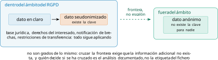
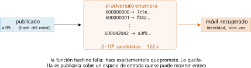
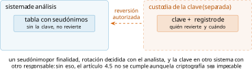
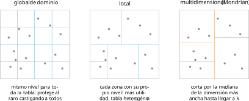
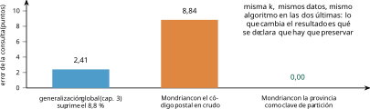
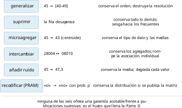
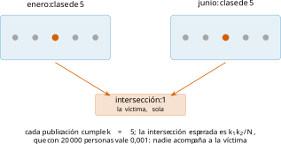
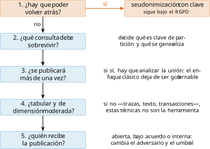

Capítulo 4. Seudonimización y anonimización clásica
Con el capítulo anterior aprendimos a poner número al riesgo. Toca ahora recorrer las técnicas que ese número gobierna: las que la industria lleva treinta años aplicando y que siguen siendo, con diferencia, las más usadas. Sustituir un identificador por un código, generalizar una edad a una franja, suprimir las filas raras, promediar grupos pequeños. Son operaciones sencillas de entender y de implementar, y precisamente por eso conviene saber exactamente hasta dónde llegan.
Este capítulo tiene, por tanto, dos mitades y una tesis. La primera mitad es de vocabulario jurídico, y no es un rodeo: la diferencia entre seudonimizar y anonimizar es la diferencia entre estar dentro y fuera del RGPD, y se confunde constantemente —también en pliegos, en contratos y en memorias de proyecto—. La segunda es técnica: las familias de métodos, implementadas y medidas sobre nuestros datos, con la comparación que interesa de verdad, que no es cuál conserva más bits sino cuál responde mejor la pregunta que motivaba la publicación. Y la tesis, que el capítulo demuestra midiendo, es que estas técnicas funcionan bien exactamente donde se inventaron —microdatos tabulares de dimensión moderada, con jerarquías declaradas y una finalidad conocida— y se degradan de forma abrupta fuera de ese terreno.
Seudonimizar no es anonimizar
Empecemos por la distinción que más dinero cuesta en la práctica.
El «tratamiento de datos personales de manera tal que ya no puedan atribuirse a un interesado sin utilizar información adicional, siempre que dicha información adicional figure por separado y esté sujeta a medidas técnicas y organizativas destinadas a garantizar que los datos personales no se atribuyan a una persona física identificada o identificable» (Reglamento (UE) 2016/679, General de Protección de Datos (RGPD) 2016).
Léase con atención la estructura de la definición, porque contiene la respuesta: la seudonimización presupone que existe información adicional que permite volver atrás. No la destruye: la separa y la protege. Y de ahí se sigue lo que el considerando 26 dice sin ambigüedad: los datos seudonimizados siguen siendo datos personales y siguen dentro del ámbito del reglamento. La anonimización, en cambio, aspira a que esa información adicional no exista para nadie, y solo entonces el resultado queda fuera.
No son grados de lo mismo, sino categorías jurídicamente disjuntas: un dato está dentro o fuera. La confusión es tan frecuente que conviene fijar las consecuencias prácticas, que son enormes: sobre datos seudonimizados siguen aplicando la base jurídica, los derechos del interesado, la obligación de notificar brechas y las restricciones de transferencia internacional; sobre datos realmente anónimos, ninguna. La figura 1.1 lo resume.

Dónde aparece en el reglamento, y dónde no
Un mapa útil, porque la seudonimización aparece en más sitios de los que suele citarse —seis artículos y siete considerandos— y con papeles distintos:
Art. 4.5: la definición.
Art. 6.4.e): como garantía que pesa en el juicio de compatibilidad de un tratamiento ulterior. Ojo: es un factor del test, no una autorización.
Art. 25.1: ejemplo de medida de protección desde el diseño.
Art. 32.1.a): ejemplo de medida de seguridad.
Art. 40.2.d): contenido posible de un código de conducta.
Art. 89.1: garantía para fines de archivo, investigación y estadística.
Y ahora lo que no dice, que es donde se equivocan los pliegos: el RGPD no obliga en ningún sitio a seudonimizar. Los artículos 25 y 32 la mencionan como ejemplo —«medidas apropiadas, como la seudonimización»—, dentro de listas explícitamente ejemplificativas y condicionadas al riesgo. Es una medida recomendable y muchas veces exigible por el análisis de riesgo, pero no una obligación autónoma; el propio EDPB lo dice con todas las letras (European Data Protection Board 2025).
El estado de la doctrina, y por qué está en movimiento
Aquí hay que ser especialmente cuidadoso con las fechas, porque este es de los pocos rincones del libro donde la doctrina ha cambiado mientras se escribía.
El EDPB adoptó en enero de 2025 unas directrices sobre seudonimización (European Data Protection Board 2025) cuya tesis central es contundente: los datos seudonimizados son personales también cuando los datos y la información adicional no están en las mismas manos. Conviene saber dos cosas sobre ellas. La primera, que a fecha de redacción de este capítulo siguen siendo la versión para consulta pública: la consulta se cerró en marzo de 2025 y no hay texto final. La segunda, y más importante, que el Tribunal de Justicia de la Unión Europea se pronunció después —en septiembre de 2025, en el asunto C-413/23 P (Sentencia del Tribunal de Justicia de la Unión Europea, asunto C-413/23 P, EDPS contra Junta Única de Resolución 2025)— matizando precisamente ese punto: el carácter personal de un dato seudonimizado debe valorarse también desde la perspectiva de quien lo recibe, con el criterio de los medios razonablemente utilizables del considerando 26.
La lectura prudente para un ingeniero, que es la que este libro adopta, evita los dos extremos. No es cierto que seudonimizar convierta un dato en anónimo para el receptor por el mero hecho de entregárselo sin la tabla de correspondencia; tampoco lo es que el dato sea personal para todo el mundo en toda circunstancia por definición. Lo que hay que hacer, y esto no ha cambiado, es analizar y documentar qué medios tiene realmente ese receptor —qué fuentes auxiliares, qué acceso, qué incentivo—, que es el análisis del capítulo 2 aplicado a una entrega concreta. Quien tenga que decidir sobre un caso real debe además comprobar el estado de esta doctrina: es de las que se mueven.
Por qué el hash no anonimiza
Pasemos a la técnica, empezando por el error más repetido de todo el sector: sustituir un identificador por su hash y llamar a eso anonimizar.
El argumento, y el ataque
El razonamiento equivocado es tentador: una función hash criptográfica es de un solo sentido —dado el resumen, no se puede recuperar la entrada—, luego publicar el hash del DNI es seguro. El error está en confundir «irreversible» con «no invertible por enumeración». Una función hash es irreversible en general, para entradas arbitrariamente largas; pero si el adversario sabe que la entrada es un DNI, no necesita invertir nada: le basta con recorrer todos los DNI posibles, hashear cada uno y comparar, como esquematiza la figura 1.2.
El coste de ese ataque es exactamente el tamaño del espacio de entrada, y los espacios de los identificadores reales son ridículamente pequeños. El script src/cap04/hash_no_anonimiza.py lo mide en la máquina en que se escribió este libro:
velocidad medida: 1.630.949 hashes/segundo (Python puro, un núcleo)
móvil español (6xx/7xx) 200.000.000 candidatos · 122,6 s
DNI (8 dígitos + letra) 100.000.000 candidatos · 61,3 s
matrícula española 64.000.000 candidatos · 39,2 s
número de historia (6 díg.) 1.000.000 candidatos · 0,6 sDos minutos para el espacio completo de móviles españoles, con Python puro y un solo núcleo. Con una tarjeta gráfica de gama media, que hace del orden de diez mil millones de SHA-256 por segundo, el mismo barrido baja a dos centésimas de segundo. No hay ninguna función hash que arregle esto: el problema no es la función, es que el espacio de entrada es enumerable. La AEPD y el Supervisor Europeo publicaron en 2019 una nota técnica con este mismo ejemplo sobre móviles españoles (Agencia Española de Protección de Datos y European Data Protection Supervisor 2019), y su cifra de referencia —un millón de hashes por segundo— era ya entonces conservadora.

El caso de los taxis de Nueva York
El caso documentado que conviene contar entero, porque contiene tres lecciones y casi siempre se cuenta mal.
En marzo de 2014, tras una solicitud de acceso a información pública, la comisión de taxis de Nueva York entregó los registros de unos 173 millones de viajes: recogida, destino, hora, tarifa y los identificadores de licencia y taxi, estos últimos «anonimizados» con MD5. Vijay Pandurangan comprobó que el espacio de licencias era diminuto —el formato es conocido y hay unas decenas de miles— y reconstruyó la tabla inversa completa en cuestión de minutos (Pandurangan 2014). Poco después, Anthony Tockar mostró que con los viajes ya desanonimizados y algunas fuentes auxiliares —fotografías de famosos saliendo de un taxi con fecha y lugar— podía identificarse a pasajeros concretos, e incluso inferir visitas a domicilios particulares desde un club nocturno (Tockar 2014).
Las tres lecciones: el fallo no fue MD5. Con SHA-256, SHA-3 o cualquier función moderna el ataque habría sido igual de barato, porque el problema era el espacio de entrada. El fallo no fue del organismo que pidió los datos, sino de quien los publicó creyendo que hashear bastaba. Y la reidentificación de pasajeros no dependía del hash: venía de las coordenadas y las horas, es decir, de la huella de comportamiento del capítulo 1.
Lo que sí funciona, y lo que sigue sin lograr
La técnica correcta para seudonimizar un identificador es un hash con clave —un HMAC, o un cifrado determinista con clave—, donde la clave es secreta y se custodia separada de los datos. Sin la clave, el adversario no puede construir la tabla inversa aunque conozca el espacio entero. Es lo que recomienda la guía de desidentificación de NIST (Garfinkel et al. 2023) y lo que hace la última línea de nuestro script.
Dos advertencias que rara vez se dan juntas. La primera: añadir una sal pública no resuelve nada. La sal impide reutilizar tablas precalculadas entre publicaciones, que es útil, pero si la sal se publica junto a los datos —como suele ocurrir para que las tablas sean unibles— el barrido del espacio vuelve a funcionar tal cual; el script lo comprueba.
La segunda, y es la que cierra el círculo con la sección anterior: el HMAC bien hecho seudonimiza, no anonimiza. Existe una clave que revierte la operación; existe, por tanto, información adicional; el resultado sigue siendo un dato personal en el sentido del artículo 4.5. Hacerlo bien no saca el tratamiento del RGPD: reduce el riesgo y lo hace defendible, que ya es mucho.
La arquitectura, que es lo que de verdad protege
Si el HMAC solo seudonimiza, lo que decide el nivel real de protección no es la función sino la arquitectura que rodea a la clave. Cuatro decisiones, en orden de importancia:
1. Dónde vive la clave. La definición del artículo 4.5 exige que la información adicional «figure por separado». Separado significa en otro sistema, con otro control de acceso y otro responsable —no en otra tabla de la misma base de datos, que es lo que suele encontrarse—. Un almacén de secretos o un módulo de seguridad hardware convierten esa exigencia en algo comprobable.
2. Quién puede revertir, y con qué traza. La reversión debe ser una operación registrada, autorizada y auditable. El considerando 29 del RGPD llega a pedir que se indique quiénes son las personas autorizadas: sin ese registro, la organización no puede saber —ni demostrar— si alguien revirtió.
3. Un seudónimo por finalidad. Si el mismo código identifica a la persona en investigación, en facturación y en el portal público, cualquiera que vea dos de esas bases puede cruzarlas. La práctica correcta es derivar seudónimos distintos por finalidad —con claves o etiquetas distintas— de modo que la vinculación entre dominios exija volver al custodio de la clave.
4. Rotación, y su precio. Cambiar la clave periódicamente limita el daño de una filtración, pero rompe la continuidad de los análisis longitudinales: el mismo paciente pasa a ser dos personas distintas antes y después de la rotación. Es un compromiso real que hay que decidir con el analista, no una buena práctica automática.

Tokenización y cifrado determinista
Dos variantes que aparecen mucho en sistemas transaccionales y que conviene distinguir del hash.
La tokenización sustituye el identificador por un valor sin relación matemática con él —un número de serie— y guarda la correspondencia en una tabla custodiada. Su ventaja sobre cualquier esquema criptográfico es que no hay nada que romper: sin la tabla, el token no dice absolutamente nada. Su inconveniente es operativo: la tabla crece, hay que replicarla y protegerla, y se convierte en el punto único de fallo.
El cifrado determinista —cifrar el identificador con una clave, siempre con el mismo resultado— permite unir tablas sin tabla de correspondencia, porque el mismo DNI produce siempre el mismo criptograma. Es cómodo y tiene un coste que hay que conocer: filtra la igualdad. Un adversario ve qué registros pertenecen a la misma persona y, con eso, puede contar frecuencias y atacar por análisis de frecuencia igual que en un cifrado clásico por sustitución. Sirve para unir; no protege el patrón de aparición.
La regla práctica que se sigue de todo esto: si dos registros del mismo sujeto deben poder unirse, esa capacidad de unión es información, y hay que decidir conscientemente quién la tiene. No es un detalle de implementación: es la diferencia entre un seudónimo que protege y uno que solo cambia la etiqueta.
Generalizar y suprimir, en serio
El capítulo 3 recorrió a mano una escalera de generalización global. Toca ahora ver cómo se hace de verdad, con las tres familias que implementan las herramientas.
Global, local y multidimensional
La generalización global de dominio elige un nivel de la jerarquía por columna y lo aplica a toda la tabla: todas las edades a quinquenios, todos los códigos postales a provincia. Es lo que hicimos en el capítulo 3, es fácil de explicar y produce una tabla homogénea que cualquier analista entiende. Su defecto es estructural: para proteger a la persona más rara hay que generalizar a todo el mundo. Los algoritmos clásicos de esta familia son Datafly (Sweeney 1997), que generaliza iterativamente el atributo con más valores distintos, e Incognito (LeFevre et al. 2005), que recorre el retículo de generalizaciones posibles con una propiedad de monotonía que le permite podar.
La generalización local permite que dos filas con el mismo valor original acaben con generalizaciones distintas. Conserva más información y produce tablas heterogéneas, más difíciles de explicar y de analizar.
La multidimensional —Mondrian (LeFevre et al. 2006)— es el punto intermedio que se impuso en la práctica: particiona el espacio de cuasi-identificadores en regiones rectangulares con al menos \(k\) filas cada una, y generaliza dentro de cada región. Donde hay densidad conserva resolución; donde hay pocos datos, agranda.

El algoritmo de Mondrian cabe en cuatro líneas y es fácil de razonar: mientras la región tenga al menos \(2k\) filas, se elige la dimensión de mayor rango normalizado, se corta por su mediana y se recurre; si alguno de los dos lados quedaría por debajo de \(k\), la región no se parte y se publica tal cual. Nótese que, por construcción, Mondrian no suprime ninguna fila: toda región cumple el umbral. Es su ventaja más citada.
Medido: Mondrian frente a la generalización global
El script src/cap04/mondrian.py lo implementa y lo ejecuta sobre nuestros veinte mil registros, con el código postal, la edad y el sexo como cuasi-identificadores:
tabla original: 20000 filas · utilidad 14,24 bits
k= 2 -> 3291 regiones · utilidad 7,16 bits · sin suprimir nada
k= 5 -> 1338 regiones · utilidad 6,57 bits · sin suprimir nada
k=10 -> 669 regiones · utilidad 6,09 bits · sin suprimir nada
k=50 -> 129 regiones · utilidad 4,94 bits · sin suprimir nadaHasta aquí, lo esperado. Pero el capítulo 3 nos enseñó a desconfiar de las métricas genéricas de utilidad y a medir contra la consulta que motiva la publicación. Al hacerlo, el resultado es incómodo:
COMPARACIÓN a k=5, midiendo el error de la consulta de prevalencia:
global (cap. 3, «provincia»): 2,41 puntos, suprimiendo el 8,8%
Mondrian: 8,84 puntos, sin suprimir ninguna
(79,5% de filas no atribuibles)Mondrian, que no suprime a nadie y que la literatura presenta como superior, sale casi cuatro veces peor en la consulta que importa. La razón, cuando se mira la tabla publicada, es evidente y muy instructiva: Mondrian trata el código postal como un número y corta por la mediana, de modo que sus regiones producen intervalos como [1000-28015] que atraviesan fronteras provinciales. Esas filas siguen publicadas —no se ha suprimido ninguna— pero han dejado de poder atribuirse a una provincia: el 79,5 % del conjunto es inservible para la única pregunta que la publicación quería responder.
La corrección, y la lección
El arreglo no consiste en cambiar de algoritmo sino en decirle qué hay que preservar. Probamos dos variantes:
(a) provincia como una dimensión más de Mondrian:
error 9,87 puntos · 89,4% no atribuibles (peor todavía)
(b) provincia como CLAVE DE PARTICIÓN, nunca generalizada:
error 0,00 puntos · 0 filas suprimidas · utilidad 9,19 bitsLa variante (a) falla porque Mondrian sigue cortando esa dimensión en rangos —[1-28]— que vuelven a atravesar provincias. La variante (b) resuelve el problema por completo: se particiona primero por provincia y se ejecuta Mondrian dentro de cada una sobre edad y sexo. El resultado es un error de cero puntos, sin suprimir una sola fila, con \(k=5\) garantizado y una utilidad de 9,19 bits, comparable a la de la generalización global que sí suprimía el 8,8 %.

De aquí sale la lección de ingeniería más importante del capítulo, y conviene enunciarla sin rodeos: lo que la consulta necesita exacto no puede ser una dimensión a generalizar, tiene que ser una clave de partición. Dicho de otro modo, la declaración de jerarquías —esa tarea aburrida que las herramientas piden al principio y que casi siempre se despacha con valores por defecto— no es configuración: es el momento en que se decide qué análisis sobrevivirán. Es exactamente donde hay que sentar al epidemiólogo, no al administrador de sistemas.
Otras familias del control de divulgación
La generalización y la supresión son las técnicas que la literatura de \(k\)-anonimato hizo famosas, pero el control de divulgación estadístico —la disciplina de los institutos oficiales, muy anterior— tiene un repertorio más amplio que conviene conocer.
Microagregación
La idea: en lugar de generalizar a intervalos, se agrupan los registros en conjuntos de al menos \(k\) y se sustituye cada valor por el centroide de su grupo. La tabla resultante conserva el tipo de dato original —sigue habiendo edades, no intervalos— lo que facilita enormemente el análisis posterior (Domingo-Ferrer y Mateo-Sanz 2002). Aplicada sobre el cuasi-identificador completo, garantiza \(k\)-anonimato (Domingo-Ferrer y Torra 2005).
Sus defensores sostienen que preserva más utilidad que generalizar y suprimir, y hay evidencia experimental en esa dirección (Soria-Comas et al. 2015). Conviene ser preciso sobre el estatus de esa afirmación: es un resultado argumentado y medido, no un teorema; depende del conjunto, de la métrica de utilidad y de la implementación concreta.
Un matiz de complejidad que circula mal: la microagregación óptima multivariante es NP-difícil, pero la univariante se resuelve en tiempo polinómico (Oganian y Domingo-Ferrer 2001). Decir «la microagregación es NP-dura» sin el apellido es incorrecto, y es de esas frases que se repiten en tesis y en pliegos.
Intercambio, ruido y recodificación aleatoria
Tres familias más, que aparecen sobre todo en publicaciones estadísticas oficiales:
Intercambio (swapping). Se eligen pares de registros parecidos y se les permutan algunos valores —típicamente el territorio—. Los totales agregados se conservan casi exactos mientras la asociación individual se rompe. Es la técnica que las oficinas censales usaron durante décadas, y su punto débil es que la protección que ofrece no se puede acotar: depende de cuántos intercambios y de cuáles, parámetros que además suelen mantenerse en secreto, lo que impide al analista corregir el sesgo.
Adición de ruido. Sumar una perturbación aleatoria a los valores numéricos. Es el antecedente directo de la privacidad diferencial —y la diferencia, que veremos en el capítulo 5, no está en añadir ruido sino en calibrarlo con una garantía—.
Recodificación aleatoria (PRAM). Cambiar el valor de una variable categórica con cierta probabilidad, según una matriz de transición conocida. Como la matriz se publica, el analista puede corregir los sesgos en sus estimaciones, lo que la hace muy superior al intercambio en términos de honestidad estadística. Es, de hecho, la misma idea que reaparecerá en el capítulo 7 con el nombre de respuesta aleatorizada.

Las técnicas contra los tres criterios europeos
El capítulo 3 presentó las tres pruebas que el marco europeo exige superar para declarar anónimo un resultado: que no se pueda singularizar a un individuo, que no se puedan vincular registros suyos y que no se pueda inferir información sobre él (Article 29 Data Protection Working Party 2014). Es un ejercicio muy revelador pasar por esas tres pruebas las familias de este capítulo, porque explica de un golpe por qué ninguna basta sola.
| Técnica | singularizar | vincular | inferir |
|---|---|---|---|
| seudonimización (HMAC) | sí | sí | sí |
| generalización a \(k\) | no | sí | sí |
| \(+\) \(l\)-diversidad | no | sí | parcial |
| \(+\) \(t\)-cercanía | no | sí | parcial |
| microagregación | no | sí | sí |
| intercambio | parcial | parcial | parcial |
| ruido no calibrado | parcial | parcial | parcial |
La columna que conviene mirar despacio es la del medio. La vinculabilidad sobrevive a casi todo: mientras cada persona siga teniendo una fila propia —aunque sus valores estén generalizados o promediados—, dos publicaciones sobre la misma población pueden cruzarse. Es la razón técnica del fallo de composición que veremos a continuación, y explica por qué el \(k\)-anonimato, que ataca bien la singularización, no cierra el problema.
La columna de la derecha, la inferencia, es la que ninguna técnica sintáctica cierra del todo: \(l\)-diversidad y \(t\)-cercanía la acotan dentro de una clase, pero no frente a un adversario con conocimiento externo. Y la de la izquierda es la única donde estas técnicas realmente triunfan.
De aquí se sigue una lectura del capítulo entero: las técnicas clásicas son muy buenas contra la singularización, mediocres contra la vinculación y débiles contra la inferencia. Los ataques del capítulo 2 explotaban precisamente las dos últimas. Y la privacidad diferencial, que llega en el capítulo siguiente, ataca las tres a la vez porque no razona sobre la forma del resultado sino sobre lo que cambia cuando una persona entra o sale —que es, exactamente, la formulación de las tres pruebas en una sola—.
Dos publicaciones no componen
Hay un fallo de las técnicas de este capítulo que no se arregla afinando parámetros y que conviene ver con un ejemplo, porque es el que más daño hace en organizaciones que publican de forma periódica.
Supongamos que un hospital publica en enero una tabla \(k\)-anonimizada con \(\{\)edad, sexo, provincia\(\}\) y en junio otra, con los mismos pacientes, \(k\)-anonimizada con \(\{\)edad, sexo, servicio\(\}\). Cada una cumple \(k=5\) por separado. Pero un adversario que tenga las dos puede intersecar: quien esté en una clase de cinco personas de la primera y en una clase de cinco de la segunda queda, con frecuencia, en una intersección de una o dos. Ninguna de las dos publicaciones incumple nada; la unión sí (figura 1.7).
Sean \(T_1\) y \(T_2\) dos publicaciones de la misma población, cada una \(k\)-anónima respecto de sus respectivos cuasi-identificadores \(Q_1\) y \(Q_2\). En general, la tabla que resulta de cruzarlas por los individuos comunes no es \(k\)-anónima respecto de \(Q_1 \cup Q_2\); su \(k\) efectiva puede llegar a 1.
Es el ataque de composición que formalizan Ganta et al. (2008), y no es una curiosidad teórica: es la situación normal de cualquier registro que publique series periódicas, o de dos organismos que publiquen sobre la misma población. Su gravedad práctica: no existe forma de que quien publica la segunda tabla garantice el resultado sin conocer y controlar todas las publicaciones anteriores, propias y ajenas.
Compárese con lo que ofrecerá el capítulo 5. La privacidad diferencial tiene un teorema de composición —la garantía se degrada de forma conocida y acotable al acumular publicaciones—, y eso permite gobernar un programa continuo con un presupuesto. Aquí no hay presupuesto que llevar: hay que rehacer el análisis entero cada vez, y sobre la unión.

La cuenta, con números
Merece la pena ver la aritmética, porque la magnitud sorprende. Sea una población de \(N\) personas y dos publicaciones \(k\)-anónimas independientes con clases de tamaño \(k_1\) y \(k_2\). Si los dos cuasi-identificadores son aproximadamente independientes entre sí, la probabilidad de que una persona concreta comparta clase con otra en ambas publicaciones es del orden de \[\frac{k_1}{N} \cdot \frac{k_2}{N} \cdot N \;=\; \frac{k_1 k_2}{N},\] de modo que el tamaño esperado de la intersección es \(k_1 k_2 / N\). Con \(k_1 = k_2 = 5\) y una población de veinte mil personas, la intersección esperada es \(25/20\,000 \approx 0{,}00125\): es decir, prácticamente nadie más acompaña a la víctima. Dos publicaciones impecables por separado producen, juntas, un conjunto de anonimato de tamaño uno.
La fórmula da además la regla práctica: para que la intersección conserve un tamaño \(k\) hacen falta clases de tamaño \(\sqrt{k \cdot N}\) en cada publicación —con nuestros números, clases de trescientas personas para conservar \(k=5\)—, lo que destruye la utilidad mucho antes de proteger. No es que componer sea difícil: es que componer con estas técnicas es inviable.
Qué exige la doctrina española
Cerrando la parte normativa, conviene saber qué pide exactamente la autoridad española, y con qué estatus.
La AEPD publicó unas orientaciones sobre procedimientos de anonimización (Agencia Española de Protección de Datos 2022) que siguen siendo la referencia habitual en España, con dos advertencias que hay que dar juntas: son de 2016, es decir anteriores a la aplicación del RGPD, y la propia Agencia las mantiene marcadas «en revisión» en su portal. Citarlas sin decirlo induce a error sobre su vigencia.
Su núcleo doctrinal, sin embargo, sigue siendo sólido y encaja con todo lo visto: ninguna técnica de anonimización garantiza en términos absolutos la imposibilidad de reidentificación, de modo que el responsable debe evaluar el riesgo residual, documentarlo y reevaluarlo con el tiempo. Es, palabra por palabra, el ciclo de auditoría del capítulo 2 y el informe reproducible del capítulo 3.
Dos documentos conjuntos de la AEPD con el Supervisor Europeo completan el cuadro y conviene conocerlos: la nota técnica sobre la función hash (Agencia Española de Protección de Datos y European Data Protection Supervisor 2019), que es la fuente en español del ataque que hemos medido, y una recopilación de malentendidos frecuentes sobre anonimización (Agencia Española de Protección de Datos y European Data Protection Supervisor 2021) que matiza expresamente la insistencia de la guía de 2016 en la irreversibilidad absoluta. Nótese que ambos son de la AEPD y el EDPS —el Supervisor Europeo, que vigila a las instituciones de la UE—, no del EDPB: es un error de atribución muy común.
Por último, el EDPB tiene en consulta pública unas directrices sobre anonimización (European Data Protection Board 2026) que actualizarán el dictamen de 2014 y sus tres criterios. A la fecha de este capítulo son borrador, con la consulta abierta: quien deba decidir sobre un caso real tiene que comprobar su estado.
Los límites, demostrados
Queda la pregunta que este capítulo debe contestar antes de dar paso a la Parte II: ¿por qué no basta con esto?
La maldición de la dimensionalidad
El resultado más citado es el de Aggarwal (2005), que demuestra que al crecer el número de atributos del cuasi-identificador, la pérdida de información necesaria para alcanzar \(k\)-anonimato crece hasta hacer inútil el resultado. La intuición es la del capítulo 2: en dimensión alta los puntos están tan separados que agrupar \(k\) de ellos exige regiones enormes.
Un matiz que casi nunca se menciona al citarlo, y que conviene dar porque cambia el alcance: la demostración supone que los atributos son independientes. En datos reales hay correlación —el código postal predice en parte la renta y la profesión—, y esa correlación reduce la dimensión efectiva. El resultado sigue siendo válido como tendencia y como advertencia; no como cota exacta para un conjunto concreto.
«El coste de la privacidad», y su réplica
Brickell y Shmatikov (2008) fueron más lejos: sostuvieron que, en la publicación anonimizada de microdatos, la utilidad que se destruye supera el beneficio de privacidad que se obtiene, hasta el punto de que la «sanitización trivial» —publicar solo los atributos sensibles, sin los cuasi-identificadores— ofrecía comparable utilidad de minería con menos riesgo.
La conclusión hizo mucho ruido y recibió una réplica directa: Li y Li (2009) sostienen que la metodología de comparación empleada es inapropiada y que sus conclusiones no se sostienen tal como están formuladas. Su posición es más interesante que un simple «tenían razón» o «se equivocaban»: argumentan que Brickell y Shmatikov exageran el pesimismo sobre la utilidad y a la vez subestiman el daño de privacidad, por medir este último en promedio en lugar de acotar el peor caso —exactamente la crítica que el capítulo 3 hacía a las medias—.
Para el ingeniero, la discusión deja una enseñanza que no depende de quién ganara: las conclusiones sobre utilidad dependen por completo de qué tarea se mida, y por eso cualquier afirmación general del tipo «anonimizar destruye la utilidad» o «anonimizar la conserva» es, sin la tarea concreta delante, un enunciado vacío. Es la misma conclusión a la que nos llevó la medición de Mondrian.
Dónde funciona, entonces
Cerrando el balance, y siendo justos con unas técnicas que se critican mucho y se usan más:
Funcionan bien sobre microdatos tabulares de dimensión moderada —cinco o seis cuasi-identificadores demográficos—, cuando existe una jerarquía de generalización natural y declarada, cuando la finalidad analítica se conoce de antemano y cuando la publicación es única o poco frecuente. Es decir: encuestas, registros administrativos, altas hospitalarias. Una parte enorme de lo que publican las administraciones cae exactamente ahí, y para ese caso son la herramienta adecuada, bien entendidas y bien medidas.
Se degradan en cuanto la dimensión crece, cuando el dato es disperso (transacciones, trazas, texto), cuando hay publicaciones sucesivas que componen, o cuando el conocimiento auxiliar del adversario es rico. Y su límite de fondo, el que no se arregla con más ingenio, es el del capítulo 2: la ley fundamental de la recuperación de información (teorema [teo:dinur]) dice que sin incertidumbre calibrada no hay garantía frente a una sucesión de publicaciones.
Fuera de la tabla rectangular
El capítulo 3 delimitó el terreno de las métricas; conviene hacer lo propio con las técnicas, porque cada tipo de dato tiene su repertorio y mezclarlos es una fuente inagotable de proyectos fallidos.
Datos de conjunto (transacciones, historiales de compra, diagnósticos múltiples por paciente). Aquí cada individuo tiene un conjunto de valores, no una fila con columnas fijas, y el número de columnas potenciales es el catálogo entero. La adaptación clásica consiste en acotar el conocimiento del adversario: se supone que conoce como mucho \(m\) elementos del conjunto de su objetivo y se exige \(k\)-anonimato frente a cualquier combinación de ese tamaño. Es una solución pragmática y honesta —dice explícitamente qué adversario cubre— y deja fuera al que sepa \(m+1\).
Trayectorias. Generalizar espacio y tiempo hasta que \(k\) trayectorias coincidan destruye lo que hacía útil la trayectoria. Es el caso donde la anonimización clásica falla de forma más clara, y donde antes hubo que recurrir a garantías formales.
Texto libre. La técnica es el reconocimiento y sustitución de entidades —nombres, fechas, lugares, identificadores—, y su evaluación es empírica: no hay \(k\) que calcular. El problema abierto no es detectar el nombre, que se hace razonablemente bien, sino el dato que identifica sin ser una entidad: «el paciente trasplantado en el hospital comarcal en Nochebuena».
Imagen. Difuminar caras o retirar metadatos DICOM es necesario y no es suficiente: de una resonancia craneal se reconstruye el rostro. El capítulo 12 lo trata con sus propias herramientas.
Grafos. En una red —social, de llamadas, de transacciones— la estructura identifica por sí sola: el patrón de conexiones de una persona es tan distintivo como su huella. Sustituir los identificadores de los nodos por números no protege, porque el adversario que conozca el vecindario de su objetivo —con quién habla y cuántos son— lo localiza por topología. Las adaptaciones existen —exigir que cada nodo comparta grado con otros \(k-1\), o que su vecindario sea isomorfo al de otros \(k-1\)— pero cada refuerzo obliga a añadir o quitar aristas, y una arista falsa en un grafo de contactos es un contacto que nunca existió: el daño analítico es mucho menos tolerable que redondear una edad.
La técnica que casi nunca se considera. Antes de anonimizar conviene preguntarse si el dato tiene que existir. La minimización del artículo 5.1.c) y una política de retención agresiva son, medidas en riesgo evitado por euro invertido, más eficaces que cualquier algoritmo de este capítulo: el dato que no se recogió no se puede reidentificar, y el que se borró tampoco. Es la primera opción de la escalera y la que menos se explora, porque no da trabajo interesante a nadie.
Una alternativa que merece mención porque nace precisamente de aceptar el diagnóstico de la dimensionalidad: en lugar de generalizar, se puede partir la tabla en columnas y publicar cada bloque con las filas permutadas dentro de cada grupo, conservando las correlaciones dentro del bloque y rompiéndolas entre bloques. Es una respuesta distinta al mismo problema: no reduce la resolución, reduce la unión entre atributos.
El coste oculto: qué le pasa al análisis
Hemos medido el coste de anonimizar en bits y en error de una consulta. Falta el coste que nadie mide y que más disgustos da: el sesgo que estas técnicas introducen en los análisis posteriores. No es pérdida de precisión —que sería honesta—, sino error sistemático en una dirección.
La supresión no es aleatoria. Ya lo vimos en el capítulo 3: se suprimen las filas de clases pequeñas, es decir, las personas raras. Si la rareza correlaciona con lo que se estudia —y casi siempre correlaciona: enfermedades minoritarias, orígenes poco frecuentes, territorios despoblados—, el conjunto publicado subestima sistemáticamente lo que ocurre en esos grupos. Un analista que no sepa que hubo supresión concluirá que la enfermedad rara es aún más rara de lo que es.
La generalización atenúa las asociaciones. Sustituir una edad por un intervalo introduce error en esa variable, y el efecto conocido de medir mal una variable explicativa es que su coeficiente estimado se acerca a cero. Traducido: un estudio sobre datos generalizados tenderá a concluir que la edad influye menos de lo que influye. No es ruido simétrico; es un sesgo con dirección conocida.
Agregar invita a la falacia ecológica. Cuando se publica por provincia en lugar de por individuo, las correlaciones entre agregados no son las correlaciones entre personas, y confundirlas es un error clásico —que la anonimización empuja a cometer, porque el dato individual ya no está—.
De aquí sale una obligación que este libro añade al informe del capítulo 3: documentar las transformaciones en términos que un analista pueda corregir. Cuántas filas se suprimieron y con qué criterio; qué variables se generalizaron y a qué granularidad; si hubo intercambio o ruido, con qué parámetros. Un conjunto anonimizado sin esa hoja de ruta no solo es menos útil: induce conclusiones falsas con apariencia de rigor. Nótese que la recodificación aleatoria (sección 1.4.2) es la única de las familias clásicas que resuelve esto de raíz, porque publica su matriz de transición y permite al analista corregir.
Cuando el dato anonimizado entrena un modelo
Una pregunta que aparece en todos los proyectos y que este capítulo puede ya contestar con precisión: si entreno un modelo con datos \(k\)-anonimizados, ¿el modelo es seguro?
La respuesta corta es que \(k\)-anonimato acota la reidentificación en la tabla publicada, no la memorización del modelo. Son dos garantías distintas sobre objetos distintos. El capítulo 2 lo midió: un modelo memoriza combinaciones raras, y las combinaciones raras siguen existiendo dentro de una clase de equivalencia de cinco personas —la clase protege frente a decir cuál de las cinco, no frente a que el modelo delate que esa clase, con ese diagnóstico, estuvo en el entrenamiento—.
Hay además un efecto que sorprende y conviene anticipar: anonimizar antes de entrenar puede empeorar el modelo justo donde más falta hace. La generalización borra la resolución en las zonas ralas y la supresión elimina directamente a las minorías, de modo que el modelo entrenado con datos anonimizados sirve peor a quienes ya estaban peor servidos. Se paga privacidad con equidad, y sin decirlo.
La conclusión, que es la del libro entero, es que las garantías hay que ponerlas donde está el riesgo: si el producto es una tabla, en la tabla; si el producto es un modelo, en el entrenamiento —y eso es DP-SGD, capítulo 6—. Anonimizar la entrada y esperar que la garantía se propague al modelo es una confusión de niveles.
Cómo elegir, en la práctica
Reuniendo todo el capítulo, la decisión no se toma por familia de técnica sino contestando cinco preguntas en este orden. Las tres primeras suelen bastar.
¿Hay que poder volver atrás? Si el proceso necesita reidentificar —para devolver un resultado clínico, para auditar, para ejercer derechos—, entonces la respuesta es seudonimización con clave custodiada, y el tratamiento sigue bajo el RGPD. No hay discusión posible: quien exige reversibilidad ha elegido ya.
¿Qué consulta debe sobrevivir? La respuesta determina qué se declara clave de partición y qué se puede generalizar, que es —lo hemos medido— lo que más influye en el resultado.
¿Se publicará más de una vez? Si sí, la proposición [prop:composicion] obliga a analizar la unión, y a partir de la segunda o tercera publicación el enfoque clásico deja de ser gobernable. Ahí empieza a compensar el presupuesto de la Parte II.
¿El dato es tabular y de dimensión moderada? Si no —trazas, texto, transacciones—, las técnicas de este capítulo no son la herramienta.
¿Quién recibe la publicación? Abierta, bajo acuerdo o interna: el modelo de adversario cambia, y con él el umbral.

Un caso de principio a fin
Retomemos el encargo del capítulo 3 —publicar las altas hospitalarias por territorio— y llevémoslo hasta el final con las técnicas de este capítulo, que es donde se ven las decisiones que ningún manual enumera.
Paso 1: los identificadores directos. El número de historia no se hashea: se sustituye por un seudónimo derivado con HMAC y clave custodiada por el servicio de admisión, distinto del que usa facturación. Motivo: el hospital necesita poder volver atrás si un resultado agregado obliga a avisar a un paciente, y necesita que la publicación no sea unible con la base de facturación.
Paso 2: qué consulta sobrevive. Prevalencia por provincia. Se declara la provincia como clave de partición —nunca se generaliza— y se dejan como dimensiones generalizables la edad y el sexo. Es la decisión que en nuestra medición llevó el error de 8,84 puntos a cero.
Paso 3: la anonimización. Mondrian dentro de cada provincia, con \(k=5\). Resultado medido: cero filas suprimidas, error cero en la consulta, 9,19 bits de utilidad conservada.
Paso 4: el atributo sensible. \(k\)-anonimato no protege el diagnóstico (capítulo 3). Hay que comprobar la diversidad dentro de cada región y, donde una región resulte unánime en un diagnóstico estigmatizante, generalizar el propio diagnóstico —de un código CIE-10 al capítulo de la clasificación— antes que suprimir a las personas.
Paso 5: lo que se escribe en el informe. Que la publicación es única y que cualquier publicación posterior sobre la misma población obliga a rehacer el análisis sobre la unión. Que el seudónimo es reversible por el servicio de admisión, con registro. Y que el riesgo se ha medido frente a los cuasi-identificadores declarados, no frente a los que aparezcan mañana.
Lo que este proceso no puede prometer. Que un adversario con una fuente auxiliar rica —una filtración de la mutua, por ejemplo— no reidentifique a alguien. Ninguna técnica de este capítulo lo promete, y decirlo en el informe no es debilidad: es la única forma de que la decisión de publicar sea informada.
Herramientas y flujo reproducible
Termino con lo operativo, que en este capítulo importa más que en ningún otro porque estas técnicas se aplican casi siempre con herramienta y casi nunca a mano.
Las tres de referencia ya aparecieron en el capítulo 3: ARX (Prasser et al. 2020), que cubre las métricas, los modelos de riesgo y los algoritmos de generalización con interfaz gráfica; sdcMicro (Templ et al. 2015) para quien trabaje en R, con el repertorio completo del control de divulgación estadístico —intercambio, PRAM, microagregación, ruido—; y \(\mu\)-ARGUS, la herramienta histórica de los institutos estadísticos europeos.
Tres advertencias sobre su uso, aprendidas de este capítulo:
Los valores por defecto deciden por usted. La jerarquía de generalización que la herramienta propone —o la que deduce del tipo de dato— es la que determinará qué análisis sobreviven, como acabamos de medir con la provincia. Declararla es trabajo del equipo, no de la herramienta.
La herramienta no elige el modelo de adversario. Ofrece los tres del capítulo 3 y el resultado varía en órdenes de magnitud según cuál se marque. Esa casilla se decide antes de abrir el programa.
El resultado hay que poder reproducirlo. La anonimización debe ser un script versionado con su semilla, no una sesión interactiva cuyos pasos nadie recuerda. Es la misma exigencia que el informe de riesgo del capítulo 3, y por la misma razón: lo que no se puede reproducir no se puede auditar —ni corregir cuando aparezca un fallo—.
El flujo completo que este libro recomienda, y que los scripts de src/cap04/ ejemplifican, tiene cinco pasos versionados: partir del dato en crudo con su esquema anotado (capítulo 1); aplicar la seudonimización de identificadores con clave custodiada; declarar jerarquías y claves de partición según la consulta que debe sobrevivir; ejecutar la anonimización con parámetros explícitos; y generar el informe de riesgo y el de transformaciones. Cinco ficheros en el repositorio, no cinco capturas de pantalla en un correo.
Síntesis y puente
Seudonimizar y anonimizar son categorías disjuntas, no grados: la primera deja el dato dentro del RGPD porque presupone información adicional que revierte la operación; la segunda pretende que esa información no exista. Y la doctrina sobre dónde cae exactamente la frontera está en movimiento: las directrices del EDPB de 2025 siguen sin ser definitivas y el Tribunal de Justicia matizó su tesis central en 2025, de modo que lo defendible hoy es analizar y documentar los medios reales del receptor, no invocar una regla general.
En lo técnico, el capítulo ha medido tres cosas. Que el hash de un identificador no anonimiza, porque el espacio de entrada es enumerable: el de los móviles españoles se barre entero en dos minutos con Python y en centésimas de segundo con una tarjeta gráfica; lo que sí funciona es la clave secreta, y aun así el resultado es seudónimo, no anónimo. Que Mondrian no suprime filas pero puede destruir la consulta si sus cortes ignoran la estructura del dato: en nuestro caso pasó de 8,84 puntos de error a 0,00 solo por declarar la provincia como clave de partición en vez de como dimensión. Y que las familias clásicas —microagregación, intercambio, ruido, PRAM— resuelven casos reales sin ofrecer ninguna garantía acotable.
Ese es justamente el hilo del que tira la Parte II. Todo lo visto hasta aquí protege describiendo la forma del dato publicado, y por eso su protección se evapora cuando cambia el contexto: otra publicación, otra fuente auxiliar, otra consulta. La alternativa, que empieza en el capítulo siguiente, consiste en garantizar una propiedad del mecanismo que produce la publicación, con independencia de los datos y del conocimiento del adversario. Se paga en utilidad y se gana en algo que ninguna técnica de este capítulo puede dar: una promesa que sigue valiendo mañana.
Errores comunes
Llamar anonimización a la seudonimización: son categorías jurídicamente disjuntas, y la segunda deja el dato dentro del RGPD (definición [def:seudonimizacion]).
Escribir en un pliego que «el RGPD obliga a seudonimizar»: no lo hace; los artículos 25 y 32 la citan como ejemplo dentro de listas ejemplificativas.
Publicar identificadores hasheados: el espacio de entrada es enumerable y el barrido cuesta segundos.
Culpar a MD5 del caso de los taxis: con SHA-256 habría ocurrido lo mismo.
Creer que una sal pública protege: impide reutilizar tablas entre publicaciones, no impide el barrido.
Pensar que un HMAC bien hecho anonimiza: existe la clave, luego existe información adicional.
Elegir el algoritmo de anonimización antes de saber qué consulta debe sobrevivir: es la decisión que más determina el resultado, como muestra la figura 1.5.
Dejar la declaración de jerarquías en los valores por defecto de la herramienta.
Citar «la microagregación es NP-dura» sin distinguir univariante de multivariante.
Citar la maldición de la dimensionalidad sin mencionar que su demostración supone atributos independientes.
Práctica medida y ejercicios — disponibles en la obra completa (papel, PDF y EPUB).
Marcos frente a frente: España/UE vs EE. UU. — sección disponible en la obra completa.